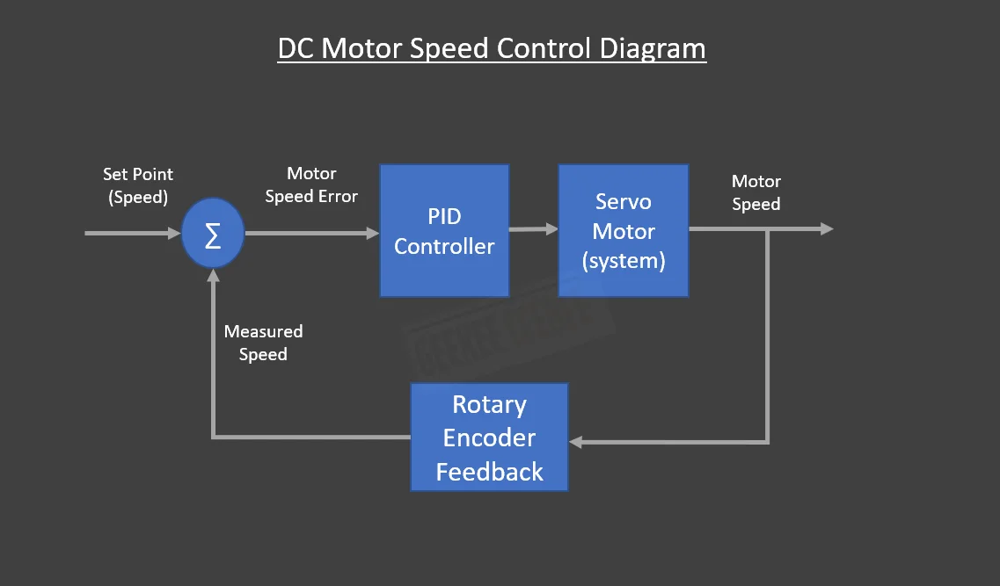
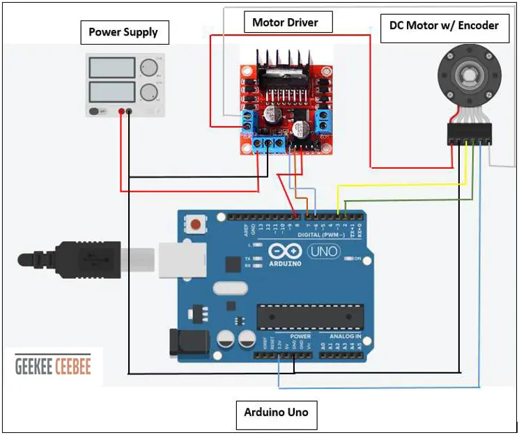

GeeKee CeeBee
Welcome to GeeKee CeeBee's Page: House of Mechatronics Projects & Lessons.
Contact Email: Ceebee1108@gmail.com
Follow me on Youtube
__________________________________________________________________________________________________________________________________
DC Motor Speed Control
Step by step practical guide to speed and position tracking control of a DC motor using Arduino.
Formulate PID theory using Numerical Approximation method.
Write PID code from scratch (Not using pre-written library).
Demonstrate the use of rotary encoders, L298n motor driver, and timer interrupts.
Disclaimer: The code and other information on this project are provided on "AS IS" basis with no warranty. Please follow best practices and assess your own potential risks for this project.
Disclaimer: The code and other information on this project are provided on "AS IS" basis with no warranty. Please follow best practices and assess your own potential risks for this project.
Components List
Arduino Uno (Affiliate Link)
DC Motor with Optical Rotary Encoder (TS-25GA370)
L298N Dual H-bridge Motor Driver (Affiliate Link)
DC Power Supply (6-12V) (Affiliate Link)
Jumper Wires and Breadboard (Affiliate Link)
Step-by-step video guide
In this video guide, you will learn how to control speed of any DC motor by controlling the supply voltage. Arduino Uno is used to perform PWM voltage control using the PID controller.
Video covers the encoder implementation, basic PID theory, implementation of Timer Interrupt and External Interrupts, derivation of control law, understanding the discrete methods of calculating
derivative and integration of error. Please watch the whole video for better understanding.
Control Diagram
Rotary encoder feedback signal is used to determine the error speed between the reference speed and the actual motor speed. PID controller
simply controls the amount of voltage needed by the motor using PWM in order to reach the desired output.

Wiring Diagram
Below is the wiring diagram for the components used in this project.
Pin2 and 3 are external ISR pins that trigger by the rotary encoder pulses. Pin6 is the PWM pin to control the amount of voltage sent
to the motor driver. Pin7 and 8 are used to change motor direction by changing the polarity of the supply voltage to the motor.
Make sure there's a common ground between the motor driver, arduino and external power supply.

__________________________________________________________________________________________________________________________________
Arduino Code
//GeeKee CeeBee
// ************ DEFINITIONS************
float kp = 0.02;
float ki = 0.00015 ;
float kd = 0;
unsigned long t;
unsigned long t_prev = 0;
const byte interruptPinA = 2;
const byte interruptPinB = 3;
volatile long EncoderCount = 0;
const byte PWMPin = 6;
const byte DirPin1 = 7;
const byte DirPin2 = 8;
volatile unsigned long count = 0;
unsigned long count_prev = 0;
float Theta, RPM, RPM_d;
float Theta_prev = 0;
int dt;
float RPM_max = 230;
#define pi 3.1416
float Vmax = 6;
float Vmin = -6;
float V = 0.1;
float e, e_prev = 0, inte, inte_prev = 0;
//**********FUNCTIONS******************
// Void ISR_EncoderA
// Void ISR_EncoderB
// Void Motor Driver Write
// Timer Interrupt
//*************************************
void ISR_EncoderA() {
bool PinB = digitalRead(interruptPinB);
bool PinA = digitalRead(interruptPinA);
if (PinB == LOW) {
if (PinA == HIGH) {
EncoderCount++;
}
else {
EncoderCount--;
}
}
else {
if (PinA == HIGH) {
EncoderCount--;
}
else {
EncoderCount++;
}
}
}
void ISR_EncoderB() {
bool PinB = digitalRead(interruptPinA);
bool PinA = digitalRead(interruptPinB);
if (PinA == LOW) {
if (PinB == HIGH) {
EncoderCount--;
}
else {
EncoderCount++;
}
}
else {
if (PinB == HIGH) {
EncoderCount++;
}
else {
EncoderCount--;
}
}
}
float sign(float x) {
if (x > 0) {
return 1;
} else if (x < 0) {
return -1;
} else {
return 0;
}
}
//***Motor Driver Functions*****
void WriteDriverVoltage(float V, float Vmax) {
int PWMval = int(255 * abs(V) / Vmax);
if (PWMval > 255) {
PWMval = 255;
}
if (V > 0) {
digitalWrite(DirPin1, HIGH);
digitalWrite(DirPin2, LOW);
}
else if (V < 0) {
digitalWrite(DirPin1, LOW);
digitalWrite(DirPin2, HIGH);
}
else {
digitalWrite(DirPin1, LOW);
digitalWrite(DirPin2, LOW);
}
analogWrite(PWMPin, PWMval);
}
void setup() {
Serial.begin(9600);
pinMode(interruptPinA, INPUT_PULLUP);
pinMode(interruptPinB, INPUT_PULLUP);
attachInterrupt(digitalPinToInterrupt(interruptPinA), ISR_EncoderA, CHANGE);
attachInterrupt(digitalPinToInterrupt(interruptPinB), ISR_EncoderB, CHANGE);
pinMode(DirPin1, OUTPUT);
pinMode(DirPin2, OUTPUT);
cli();
TCCR1A = 0;
TCCR1B = 0;
TCNT1 = 0;
OCR1A = 12499; //Prescaler = 64
TCCR1B |= (1 << WGM12);
TCCR1B |= (1 << CS11 | 1 << CS10);
TIMSK1 |= (1 << OCIE1A);
sei();
}
void loop() {
if (count > count_prev) {
t = millis();
Theta = EncoderCount / 900.0;
dt = (t - t_prev);
RPM_d = RPM_max * (sin(2 * pi * 0.005 * t / 1000.0))
* sign(sin(2 * pi * 0.05 * t / 1000.0));
if (t / 1000.0 > 100) {
RPM_d = 0;
}
RPM = (Theta - Theta_prev) / (dt / 1000.0) * 60;
e = RPM_d - RPM;
inte = inte_prev + (dt * (e + e_prev) / 2);
V = kp * e + ki * inte + (kd * (e - e_prev) / dt) ;
if (V > Vmax) {
V = Vmax;
inte = inte_prev;
}
if (V < Vmin) {
V = Vmin;
inte = inte_prev;
}
WriteDriverVoltage(V, Vmax);
Serial.print(RPM_d); Serial.print(" \t");
Serial.print(RPM); Serial.print(" \t ");
Serial.print(V); Serial.print("\t ");
Serial.print(e); Serial.println(" ");
Theta_prev = Theta;
count_prev = count;
t_prev = t;
inte_prev = inte;
e_prev = e;
}
}
ISR(TIMER1_COMPA_vect) {
count++;
Serial.print(count * 0.05); Serial.print(" \t");
}